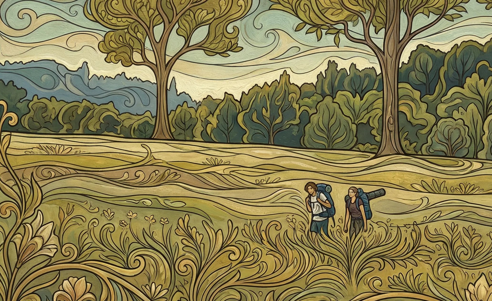
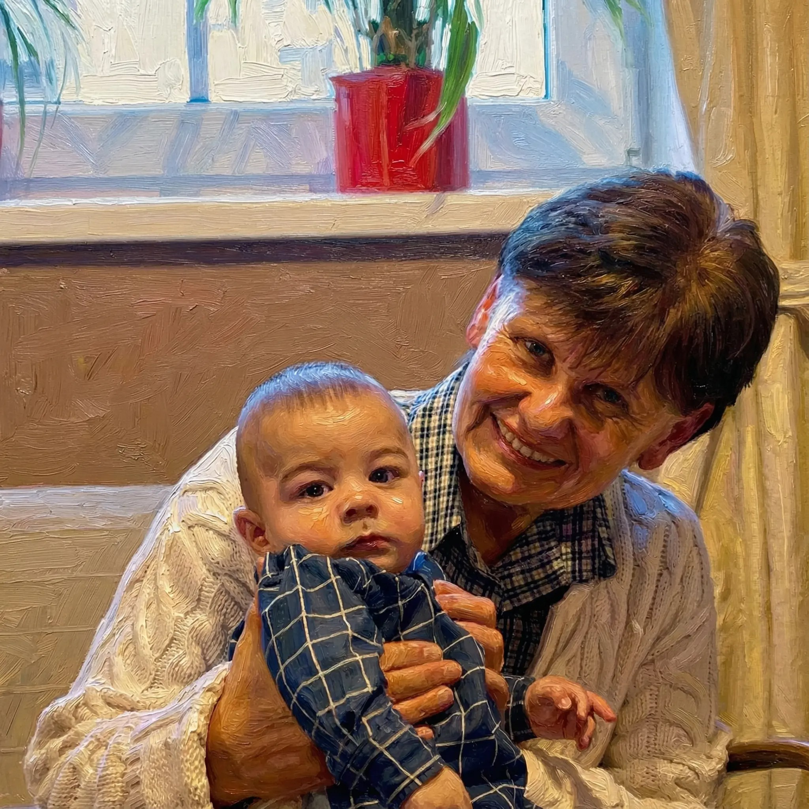

Náš příběh
Jednoho dne se naše pohledy setkaly a to mi - bez nadsázky - změnilo život.
Jsem vděčná, že je Vašek ochotný navázat se se mnou na lano a překonávat hory i údolí našeho společného příběhu.
Kyra


Potkali jsme se na pouti, a nějak jsme si nevšimli, že už skončila. A tak teď putujeme
životem
spolu.
Čůd

Obřad
Svatební mše svatá bude slavena v kostele Panny Marie v 10 hodin

Svatební oslava
Se uskuteční v areálu fary hned vedle kostela
Svatební den se blíží
Těšíme se na Vás 6. června 2026
Vstupujeme do nové kapitoly našeho společného života a budeme moc vděční, když tento den prožijete s námi. Těšíme se na Vás všechny - na naši rodinu, přátele i všechny blízké.
Harmonogram
-
9:30
Příjezd a parkování
-
10:00
Svatební mše svatá
-
11:30
Focení před kostelem
-
12:30
Oběd
-
14:00
Focení novomanželů
-
16:00
Krájení dortu
-
17:30
Živá hudba a tanec
-
00:00
Promítání
Harmonogram je orientační. Neměnný je pouze čas mše svaté.
Modlitební kamínky
Chceš i na dálku přispět ke zdaru naší svatby a nevíš jak na to? Máme tu příležitost právě pro Tebe! Stačí, když se na chvíli zastavíš a zamyslíš se. Stačí jen kratičké přání či modlitba, nebo i citát pro tuto příležitost. Kraťoučký text, který si napíšeme na oblázek. Ty nám doufejme vydláždí cestu, až ke dni D.
P. S. Přání do manželství si klidně také promysli, ale na to bude příležitost později.
Pošli modlitbuMše svatá
Svatební obřad bude součástí mše svaté, která je pro nás tou nejdůležitější částí celého dne. Potrvá zhruba hodinu až hodinu a půl.
Během mše se věřící střídají v různých postojích – stojí, sedí nebo klečí. Většina lidí se jednoduše řídí tím, co dělají ostatní, ale pro tebe to rozhodně není povinnost. Udělej jen to, v čem se cítíš dobře. Žádné gesto není nutné.
Součástí mše je také svaté přijímání. Věřící, kteří jsou připraveni, jdou přijmout eucharistii. Pokud k této svátosti přistupovat nemůžeš nebo nechceš, máš dvě jednoduché možnosti:
• zůstat sedět na svém místě, nebo
• přidat se do řady a poprosit kněze o požehnání.
Pokud zvolíš druhou možnost, stačí, když si před ústa položíš zdvižený ukazováček (stejné gesto, jako když žádáš o ticho). Kněz díky tomu pozná, že nejdeš k přijímání, ale právě pro požehnání.
Svatební hostina
Jestliže jsi pozvaný na oslavu po obřadu, věz, že nebudeme pořádat klasický svatební oběd. Nepůjde o nic velkolepého. Důležité je, abychom s tebou/s vámi prožili co nejvíce společného času. Proto jsme se rozhodli připravit dvě nebo tři “hlavní jídla” - některé s masem, některé bez masa - ze kterých si každý vybere co a kolik bude chtít. Kromě toho bude připraven raut a nebude chybět dort :)) Nebude to tolik slavnostní, ale doufáme, že si to společně užijeme.
Ubytování
V těsné blízkosti kostela je areál, do něhož se přesuneme po svatební mši svaté. Možnosti ubytování jsou v pokoji přímo na faře nebo ve venkovních chatkách. Na faře jsou 4 pokoje po 3 až 6 lůžkách - celkem 17míst. Venkovních chatek je osm, každá pro čtyři osoby - celkem 32 míst.
Potvrzení účasti
Prosíme o vyplnění formuláře, ať víme, zda-li s vámi můžeme počítat.
Potvrdit účastNaše kontakty
Nevíš? Neznáš? Nerozumíš?
Nevíš-li si rady: Oslov naše kamarády
Organizace svatby

- Lydie Uhlířová
- maminka
- 739 002 736

- Pavlínka Regnerová
- svědkyně nevěsty
- 605 993 444

- Mojmír Michálek
- svědek ženicha
- 722 299 309
Řidiči
Naši skvělí řidiči Vás bezpečně dopraví z večerní oslavy domů, popřípadě Vám po obědě pomohou dostat Vaše auto z místa oslavy kam budete potřebovat.

- Michal Kozub
- +420 …
Novomanželé

- Kristýna Kwasniaková
- 732 165 536

- Vašek Uhlíř
- 739 524 389
Odpovědi na Vaše otázky
Kde máme parkovat?
Parkování je možné dole v zatáčce před kostelem, u kaple Panny Marie Salettské nebo v Javorníku, odkud tě naši řidiči přivezou. Vše je přehledně označeno.
Jaký je dress code?
Naše svatba nebude tak docela seriózní událost, ale rádi tě uvidíme v pěkném a pohodlném oblečení. Hlavní je to společně oslavit.
Jak je to s jídlem - bude i vegetariánská/bezlepková možnost?
Ano, dej nám prosím pomocí formuláře o potvrzení účasti vědět, pokud máš speciální požadavky. Rádi se přizpůsobíme, jestliže to bude alespoň trochu v našich silách.
Bude možnost v místě oslavy přespat?
Ano, budeme za tvou přítomnost moc rádi. Je možné přijet na faru už o několik dní dřív a stejně tak po svatbě nemusíš hned odjíždět. Více informací najdeš v záložce Ubytování.
Máš nápad na zábavný/zajímavý program?
Za každý nápad budeme rádi. Jeho realizaci, prosíme, prober s Pavlínkou - svědkyní nevěsty.
Rád bych novomanžele obdaroval…
…
Můžu pro Vás ještě něco udělat?
Ano! Budeme moc rádi, když se zapojíš do našich Modlitebních kamínků, jejichž texty si společně přečteme dva
týdny před svatbou během přípravného víkendu v Travné.
A potěší nás i to, když na nás budeš myslet jakýmkoliv způsobem –
- na nás jako novomanžele, abychom do manželství vstoupili s láskou, odpuštěním, jednotou a pokojem
- na přípravy, aby byly časem setkávání, radosti a společného tvoření
- a na všechny zúčastněné, aby náš den byl požehnáním pro každého, kdo přijde